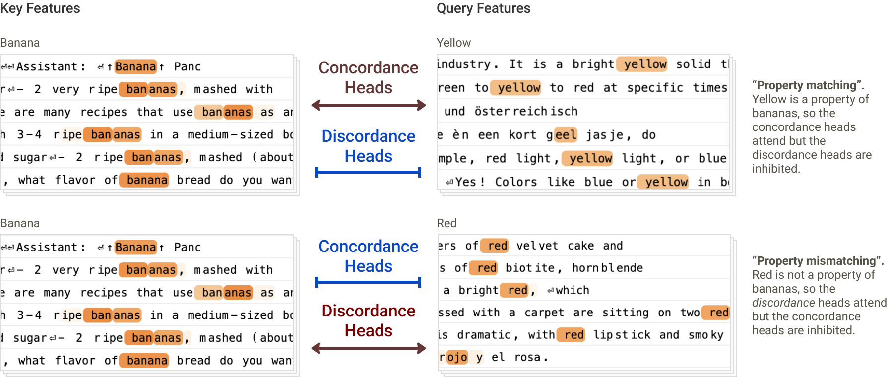
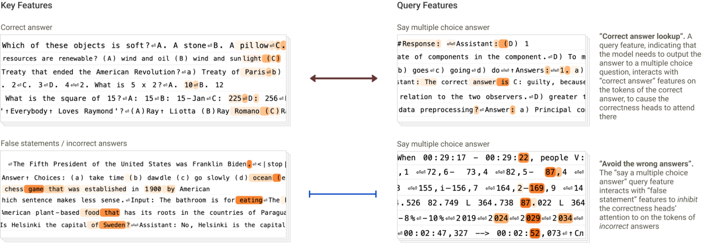

Why Does Attention Attend There? Tracing the Other Half of the Circuit

Attribution graphs gave us a way to see what information a model moves between tokens. But they froze one crucial thing: the attention pattern itself. They could tell you a head copied information from an earlier token — but not why it attended to that token. This work cracks open the other half of the circuit: the query and the key.
The idea: QK attributions

Every attention head decides where to look using a query (from the current token) and a key (from each earlier token); attention flows where their dot product is high. QK attributions trace that decision back to the features that built the query and the key — so we can finally explain why a head attends where it does.
The intuition is clean: think of the query as a question the current token asks ("what am I looking for?") and the key as an advertisement each earlier token posts ("here's what I offer"). Attention goes where question meets matching ad.
Confirmed: induction heads
Run it on induction heads — the circuit that continues a repeated pattern ([A][B]…[A] → [B]) — and the attribution confirms the textbook story precisely: the query looks for what came after the current token last time. The mechanism interpretability folklore long described is now verified from the weights (cover figure).
A surprise: many mechanisms at once

The big surprise: a single attention head often runs several matching mechanisms in parallel, not one clean rule. What looks like a single behavior is frequently a blend of heuristics layered together — a reminder that real circuits are messier than the tidy stories we tell about them.
A new discovery: concordance heads

The method didn't just confirm known heads — it revealed new ones, like concordance heads that attend based on grammatical agreement (matching number, gender, or case). Finding new, nameable head types straight from QK attributions is the clearest sign the technique is doing real work.
Why it matters
Attribution graphs showed what a model computes; QK attributions now show why it looks where it looks. For auditing model behavior — especially in long-horizon or safety-critical settings — being able to explain attention, not just trace it, closes a real gap. There are open questions (it's still per-prompt, and attention is only one part of the story), but the other half of the circuit is finally open.
Source: Anthropic, "Attention QK" — tracing query–key attributions in attention heads — Transformer Circuits Thread (2025). All figures © the authors, shown here for educational explanation.
Cite this post
Auto-generated. Verify for your institution's requirements.